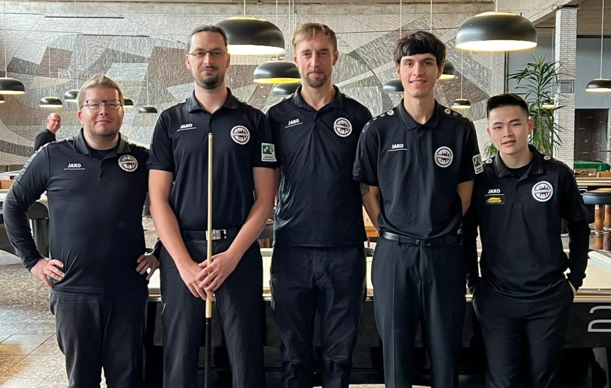

Die Billardfabrik nimmt aktiv am Ligabetrieb im Pool-Billard teil. In der Saison 2021/22 geht die Billardfabrik mit zwei Mannschaften an den Start:
Unsere 1. Mannschaft geht in die zweite Saison der Regionalliga Ost und konnte sich mit Jonas Calefice (ehem. Jugendspieler) und Sven Neumann (vormals Motor Babelsberg) verstärken. Ihr erklärtes Saisonziel ist der Aufstieg in die 2. Bundesliga (aktuelle Tabelle).
Es spielen: Tobias Georgi (c), Clemens Ebert, Jonas Calefice, Sven Neumann und Sven Wenkheimer.
Das Ziel der 2. Mannschaft in der Verbandsliga ist ebenfalls der Aufstieg. Die Hauptgegner in ihrer Liga werden die Döbelner (Poolstars) und Dresdner (PSC) Spieler sein (aktueller Spielplan und Tabelle).
Es spielen: Sebastian Müller (c), István Pataki, Vinh Nguyen, Maximilian Grund, Alec Baldin, Ralf Heinecke, Peter Kästel, Martin Weichhold, Marc Bonigut, Ammar Al Khalaf und Slim Cherif.
